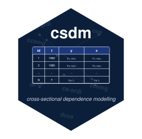

Package index
-
PWT_60_07 - Penn World Tables panel (93 countries, 1960-2007)
-
cd_test()print(<cd_test>) - Cross-sectional dependence (CD) tests for panel residuals
-
coef(<csdm_fit>) - Extract model coefficients from a fitted csdm model
-
csdm() - Panel Model Estimation with Cross-Sectional Dependence
-
csdm_csa() - Specification: Cross-sectional averages (CSA)
-
csdm_lr() - Specification: Long-run configuration
-
csdm_pooled() - Specification: Pooled constraints (stub)
-
csdm_vcov() - Specification: Variance-covariance for MG output (stub)
-
predict(<csdm_fit>) - Predict method for csdm models
-
print(<csdm_fit>) - Compact print method for fitted csdm models
-
print(<summary.csdm_fit>) - Print method for csdm summary objects
-
residuals(<csdm_fit>) - Extract residual matrix from a fitted csdm model
-
summary(<csdm_fit>) - Summarize csdm model estimation results
-
vcov(<csdm_fit>) - Extract coefficient covariance matrix from a fitted csdm model